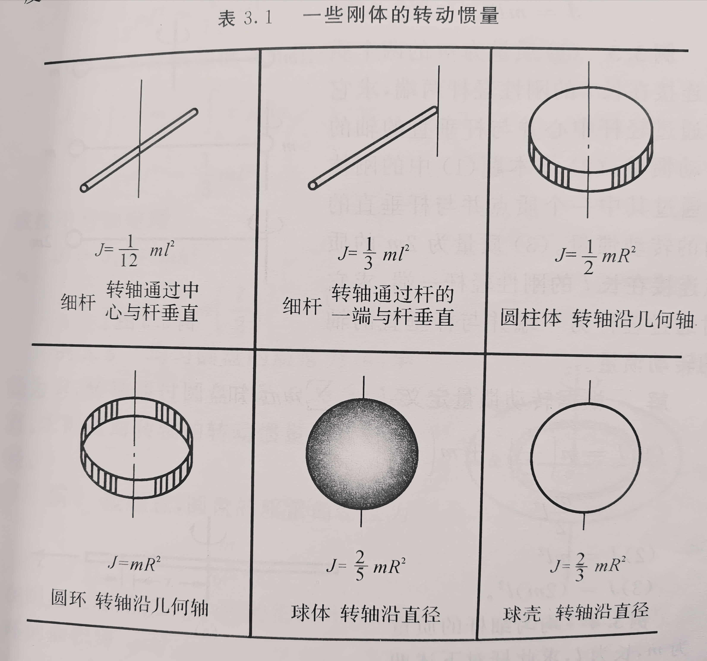
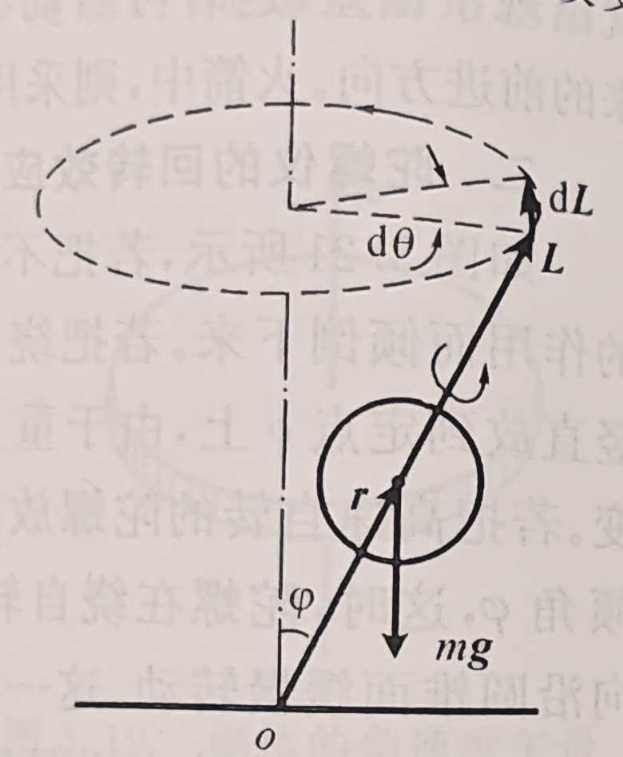
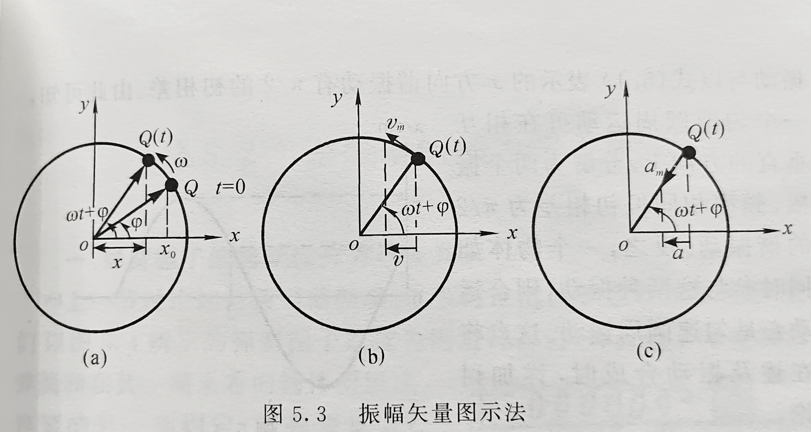
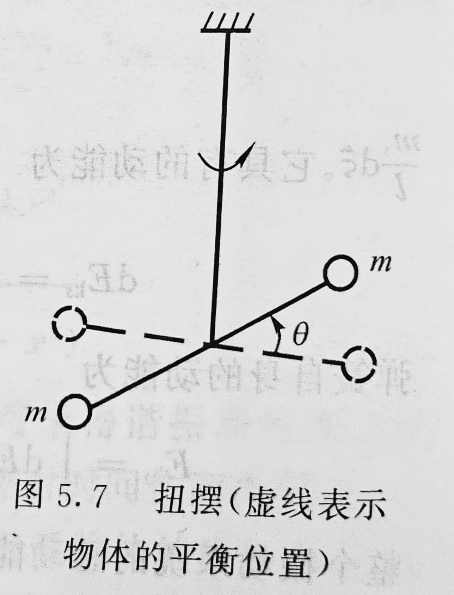
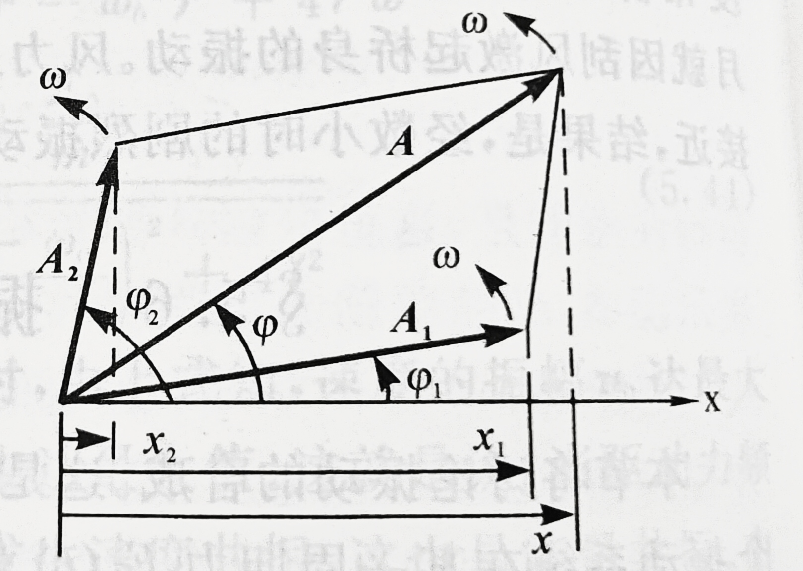
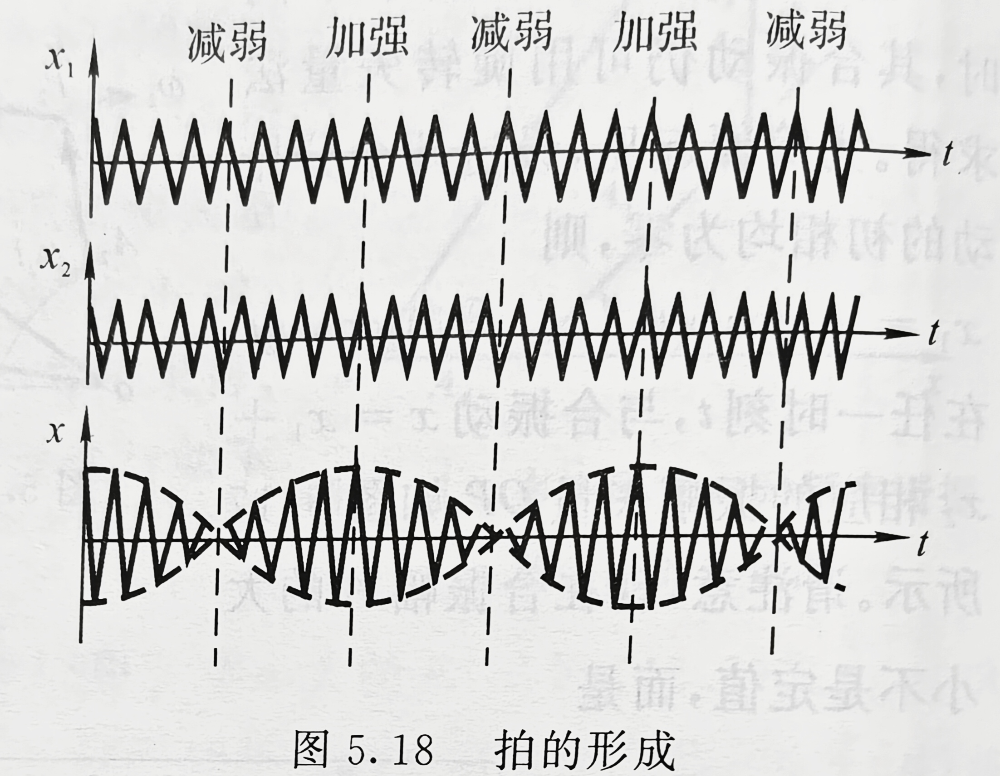
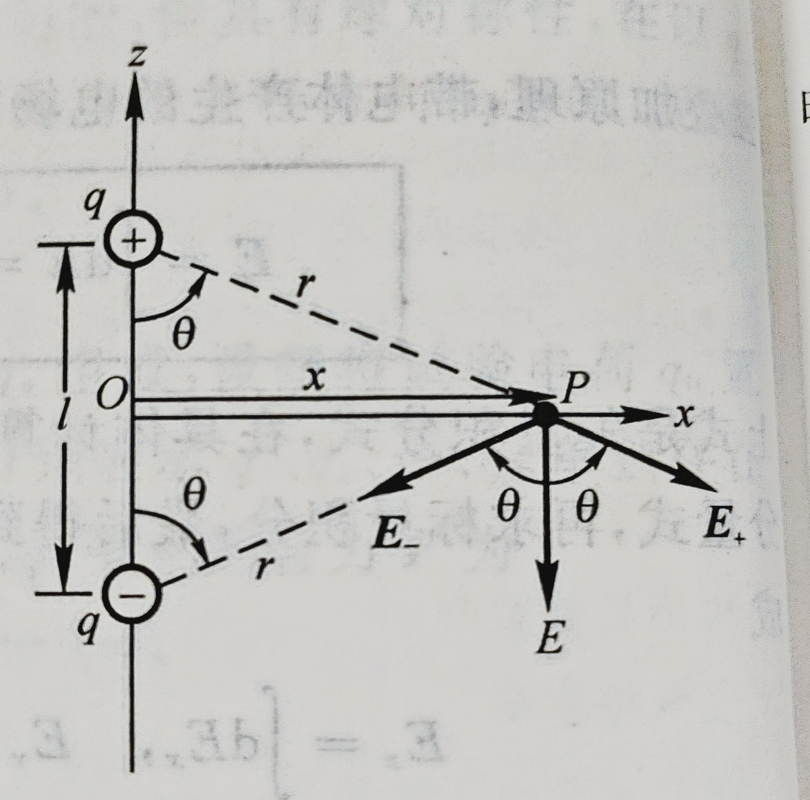
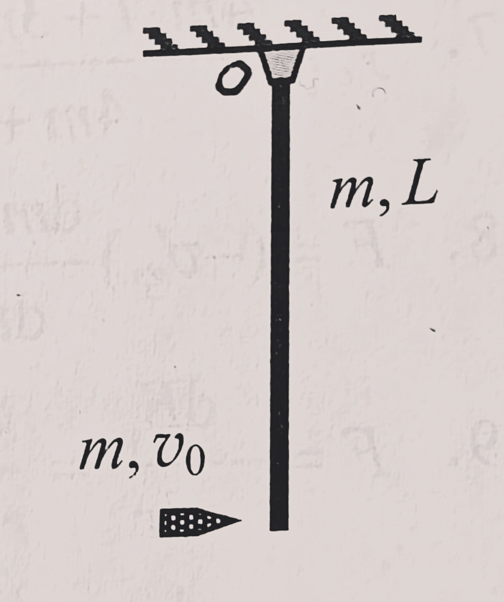
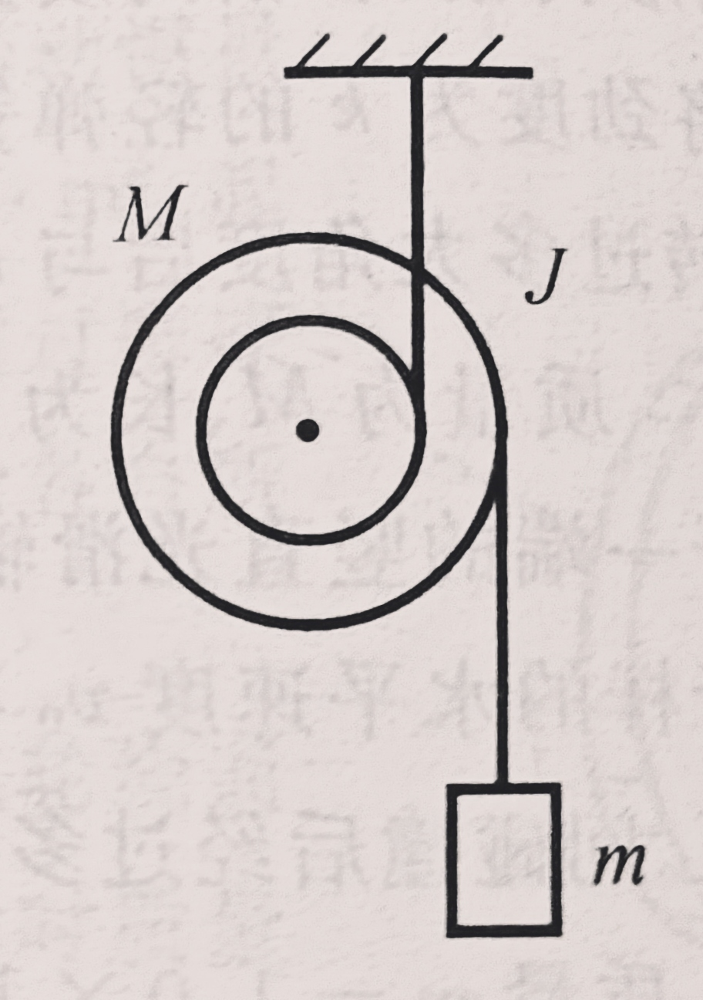

大学物理1期末复习
公式部分
质点运动学
密舍尔斯基方程
以主体和流动物组成的质点系为研究对象，设t时刻，主体的质量为m，速度为v，所受合外力为F，流动物相对主体的速度为v′
mdtdv=F+v′dtdm
刚体力学
转动惯量

平行轴定理
刚体对任一转轴的转动惯量为J，对通过质心的平行轴的转动惯量JC，两轴之间的距离为h，则有
J=JC+mh2
垂直轴定理
若刚体薄板在xy平面内，对x轴和y轴的转动惯量分别为Jx和Jy，则薄板对z轴的转动惯量为
Jz=Jx+Jy
公式比较

回转半径
RG=mJ
陀螺仪
设φ为自转轴和竖直轴之间的夹角，J为陀螺绕自转轴的转动惯量，ω为自转角速度，r为质心与定点o之间的距离

旋进角速度大小
Ω=Jωmgr
自转方向与旋进方向相同。
流体力学简介
伯努利方程
设管道中完全不可压缩和完全无粘滞性的理想流体，则对任一截面
pV+21mv2+mgh=C
C为常量
也可以写成
p+21ρv2+ρgh=C
压强和流速的关系
若管道是水平的
p+21ρv2=C
狭义相对论
洛伦兹变换
假设有两个惯性系K和K′,对应坐标轴互相平行，K′系相对K系以速度u沿x轴正方向做匀速直线运动，并设t=t′=0时两个原点o和o′恰好重合。若某事件在K系（一般是地面）中是t时刻发生在(x,y,z)处，而同一事件在K′系（一般是列车等相对地面高速运动的参考系）中是t′时刻发生在(x′,y′,z′)处，则有
⎩⎨⎧x′=1−c2u2x−uty′=yz′=zt′=1−c2u2t−c2ux
设想K系相对K′系以−u运动，即得其逆变换
⎩⎨⎧x=1−c2u2x′+ut′y=y′z=z′t=1−c2u2t′+c2ux′
爱因斯坦速度变换
⎩⎨⎧vx′=1−c2uvxvx−uvy′=1−c2uvxvy1−c2u2vz′=1−c2uvxvz1−c2u2
逆变换
⎩⎨⎧vx=1+c2uvx′vx′+uvy=1+c2uvx′vy′1−c2u2vz=1+c2uvx′vz′1−c2u2
长度收缩
设K系中沿x轴有一静止的杆，两个端点的空间坐标分别为x1和x2，即杆在K系中的长度为l0=x2−x1
则在K′系中杆的长度l′为
l′=(x2−x1)1−c2u2
杆在与杆相对静止的参照系中的长度称为固有长度或者静长。
从公式中可以看出
在相对杆静止的惯性系中，杆的长度最大，等于杆的固有长度l0。
在相对杆运动的惯性系中，杆沿运动方向的长度必小于固有长度。
时间膨胀
设在K系中的同一地点先后发生两个事件，其时空坐标分别为(x,t1),(x,t2)，K系中两个事件的时间间隔为Δt0=t2−t1
在K′系中，这两个事件的时间间隔Δt′为
Δt′=1−c2u2Δt0
从公式中可以看出
若在某惯性系中，两个事件发生在同一地点，则在这个惯性系中测得这两个事件的时间间隔最短，为固有时间Δt0
在其他惯性系中，这两个事件发生在不同地点，测得这两个事件的时间间隔大于固有时间。
质速关系
静止质量为0的物体以速度v运动时的质量m
m=1−c2v2m0
狭义相对论动力学方程
p=mv=1−c2v2m0v
动能
Ek=m0c2(1−c2v21−1)
即物体的动能等于因运动而增加的质量与光速二次方的乘积
质能方程
E=mc2
这里的m是运动质量，E是总能量
物体的静止能量即
E0=m0c2
能动关系
E2=p2c2+m02c4
机械振动
简谐振动
振幅为A，角频率为ω，初相为φ的简谐振动
x=Acos(ωt+φ),T=ω2π
v=dtdx=−ωAsin(ωt+φ)
a=dt2d2x=−ω2Acos(ωt+φ)
振幅矢量图示法

谐振动的运动方程
振动系统中，ω为振动系统的固有频率，t=0时的位移为x0，速度为v0。
ω=mk
A=x02+(ωv0)2
φ=arctanωx0−v0
注意：可以解得两个φ值，一般借助参考圆方法来决定是哪个解
谐振动的能量
E=21kA2
由
21kA2=21mv2+21kx2
可得
x=±mk(A2−x2)

扭摆
扭摆产生的弹性恢复力矩与扭转角成正比，扭摆的运动也是谐振动。设物体相对平衡位置转过了角度θ，则恢复力矩为
τ=−kθ
稳定平衡位置附近的振动
没有摩擦阻力的情况下，物体在稳定平衡位置附近的小振动均可近似看为简谐振动。在那个点处有
k=−dxdF=dx2d2Ep
单摆
ω=lg
T=ω2π=2πgl
复摆
T=2πmglJ
其中J为转动惯量，l为重心到转轴的距离
振动合成

一般画图进行分析。
同方向同频率的合成
A=A12+A22+2A1A2cos(φ2−φ1)
φ=arctanA1cosφ1+A2cosφ2A1sinφ1+A2sinφ2
特别的，若同相A=A1+A2，若反相A=∣A1−A2∣
同方向不同频率的合成
为简便设初相为0
A=A12+A22+2A1A2cos(ω2−ω1)t
特别的，A1=A2时有
A=2A1cos2ω2−ω1t
x=2A1cos2ω2−ω1tcos2ω2+ω1t

合振动强弱交替的现象称为拍，单位时间内振动忽强的次数称为拍频
ν拍=ν2−ν1
拍频等于两个分振动频率之差
相互垂直的谐振动的合成
x=A1cos(ωt+φ1)
y=A2cos(ωt+φ2)
如果初相相同，即φ1=φ2，有
y=A1A2x
即运动轨迹是一条直线。物体相对原点的位移为
r=A12+A22cosωt
如果初相相反，即φ2−φ1=±π
则
y=−A1A2x
r=A12+A22cosωt
相位差为2π或23π时
(A1x)2+(A2y)2=1
即运动轨迹为一个椭圆。
y方向上的振动相位超前2π的情况下，物体顺时针运动，超前23π或落后2π的情况下，物体逆时针运动。
机械波
波函数
平面简谐波
当y(0,t)=Acosωt，波速为u时，距离原点x的质点运动方程为
y(x,t)=Acosω(t−ux)
显然有
v=−Aωsinω(t−ux)
球面简谐波
取离波源为单位距离处的振幅为A0
y(r,t)=rA0cosω(t−ur)
一维波的运动方程
F为绳中张力，μ为绳子的线密度，u为绳上横波速度，则有
u=μF
绳上纵波速度
u=ρY
其中Y为杨氏模量，反映棒子的弹性
Y=l0ΔlsF
sF表示棒上单位横截面积的压（拉）力，称为应力，l0Δl表示在应力作用下棒的相对长度变化，称为应变
波的能量与强度
绳子的平均线能量密度
(ΔxΔE)=21μA2ω2
平均（体）能量密度为
w=21ρA2ω2
波的平均能流密度（波的强度）为
I=21ρA2ω2u
球面波的能流密度
I=4πr2P0
波的干涉
相位差
Δφ=(φ2−φ1)−λ2π(r2−r1)
振幅
A=A12+A22+2A1A2cosΔφ
当Δφ=±2kπ,k=0,1,...时干涉相长
当Δφ=±(2k+1)π,k=0,1,...时干涉相消
初相相同时，设波程差为δ
当δ=±kλ,k=0,1,2...时干涉相长
当δ=±(2k+1)2λ,k=0,1,2...时干涉相消
驻波
两列振幅相同的相干波分别沿x轴的正负方向传播
y1=Acos(ωt−λ2πx)
y2=Acos(ωt+λ2πx)
y=y1+y2=2Acosλ2πxcosωt
x=k2λ处称为波腹，振幅最大，x=(2k+1)4λ处称为波腹处称为波节，振幅最小。
相邻两波节之间动能和势能的总和保持不变
E=21μA2ω2λ
绳子两端固定的驻波
驻波的方程改写为
y=2Asinλ2πxcosωt
且
2πλL=nπ(n=1,2,3...)
则有
λn=n2L,νn=n2Lu
ν1叫做基频，ν2叫二次谐频，以此类推。
上式可改写为
νn=2LnμF
一端自由的驻波
特点
- 振幅不变
- 自由端是波腹。
L=n4λn,νn=n4Lu(n=1,3,5,...)
基频ν1=4Lu，谐频是基频的奇数倍。
驻波的共振
如上述，驻波也有其一系列固有频率。若驱动力含有这一固有频率则会引起共振。
多普勒效应
波源不动，观察者动
设波源频率为νs，相对介质的波速为u，观察者以相对介质vR的速率朝着波源运动。观察者接收到的频率
νR=uu+vRνs
观察者不动，波源动
νR=u−vsuνs
波源和观察者同一条直线上运动
νR=u−vsu+vRνs
二者相向运动时速度取正值
光源和接收器在同一直线上运动
νR=c−uc+uνs
u是光源和接收器的相对速度，相向运动时取正值
气体动理论
理想气体的压强公式
p=31nμv2ˉ=32nϵtˉ
其中μ为单个气体分子的质量，ϵtˉ=21μv2ˉ是平均每一个气体分子所具有的平动动能。称为气体分子的平均平动动能,n为单位体积分子的数量
温度与分子平均平动动能的关系
ϵtˉ=23kT
其中T为热力学温度，k=1.38×10−23J/K为玻尔兹曼常量
摩尔气体常量
R=NAk=8.31J/(mol⋅K)
方均根速率
v2ˉ=∫0∞v2f(v)dv
v2ˉ=μ3kT=M3RT
M为气体的摩尔质量
最概然速率
vp=μ2kT=M2RT
平均速率
vˉ=∫0∞vf(v)dv
vˉ=πμ8kT=πM8RT
*速度在0−v0之间的粒子的平均速率为∫0v0Nf(v)dv∫0v0vNf(v)dv
理想气体状态方程
p=nkT
或者
pV=νRT
分子平均能量
ϵˉ=2ikT,i=⎩⎨⎧3,单原子分子5,刚性双原子分子6,刚性多原子分子
单原子分子平均能量全部属于平均平动动能
刚性双原子分子平均能量中平均平动动能23kT，平均转动动能kT
刚性多原子分子平均能量中平均平动动能23kT，平均转动动能23kT
理想气体的内能
物质的量为ν的理想气体内能为
E=νNA(2ikT)=ν2iRT
等温气压公式
p=p0e−RTMgh
p为高度为h处气体的压强；p0为高度h=0处气体的压强。
空气的平均摩尔质量M=29×10−3kg/mol，在T=298K,g=9.8m/s2。
分子数密度按高度的分布
n=kTp0e−kTMgh=n0e−kTμgh=n0e−kTϵp
其中n为高度h处气体的分子数密度；n0为高度h=0处气体的分子数密度；ϵp为高度h处分子的重力势能
悬浮在液体和气体中的微粒同样适用。但是需要减去相同体积内介质的质量
例题：
设藤黄微粒为球形，悬浮于水中。已知水温为17∘C，水的密度为ρ0=1.00g/cm3；微粒半径r=0.210μm，密度为1.20g/cm3。今测得高度相差Δh=30.0μm的两层中粒子数密度之比α=1.80。求阿伏伽德罗常数。
解：
高h处粒子数密度为
n=n0e−kTϵp=n0e−34πr3(ρ−ρ0)kTgh
高h+Δh处粒子数密度为
n′=n=n0e−kTϵp=n0e−34πr3(ρ−ρ0)kTg(h+Δh)
两式相除得
n′n=n=n0e−kTϵp=n0e−34πr3(ρ−ρ0)kTgΔh=α
即34πr3(ρ−ρ0)gΔhNA=NAkTlnα=RTlnα
代入数据解得
NA=6.20×1023mol−1
分子的平均碰撞频率
Zˉ=2πd2nvˉ
d为气体的有效直径；vˉ为分子的平均速率；n为气体的分子数密度
分子的平均自由程
一个分子在两次连续的碰撞之间所走过的直线路程，称为分子的自由程。分子的平均自由程为
λˉ=Zvˉ=2πd2n1
对于理想气体
λˉ=2πd2pkT
p为气体压强
气体的迁移现象
热传导现象
热导率与微观量统计平均值之间的关系为
κ=61iknvˉλˉ
i为自由度，n为分子数密度，vˉ为分子的平均速率，λ为平均自由程
粘滞现象
dP=−ηdzdudSdt
其中dP为dt时间内沿z轴正方向通过dS所迁移的动量
粘度
η=31nμvˉλˉ=31ρvˉλˉ
n为气体的分子数密度；μ为分子质量；vˉ为分子平均速率；λ为分子平均自由程；ρ为气体密度
扩散现象
dt时间内沿z轴正方向迁移的CO气体质量dm为
dm=−DdzdρdSdt
D为气体的扩散率
D=31vˉλˉ
范德瓦尔斯方程
[p+a(Vν)2](V−νb)=νRT
当气体的量ν=1mol，上式简化为
[p+V2a](V−b)=RT
热力学基础
热力学第一定律
ΔE=Q+A
ΔE是系统内能变化量，从外界吸收能量为Q，外界对系统做功为A
准静态过程功的计算
(−A)=∫VaVbpdV
定体摩尔热容
CV,m=2iR
等体过程中吸收的热量
QV=ΔE=νCV,mΔT
理想气体内能的增量
ΔE=νCV,mΔT
定压摩尔热容
Cp,m=CV,m+R
等压过程中吸收的热量
气体吸收的热量Qp可以表示为
Qp=νCp,mΔT
摩尔热容比
γ=CV,mCp,m=1+i2
等温过程中吸收的热量
QT=(−A)=νRTlnVaVb=νRTlnpbpa
其中b为末状态，a为初状态
绝热过程方程
(−A)=−(ΔE)=−νCV,mΔT=1−γΔ(pV)
C为常数
⎩⎨⎧pVγ=CVγ−1T=CPγ−1T−γ=C
多方过程
pVn=C
等压过程中，n=0,p=C
等温过程中，n=1,pV=C
绝热过程中，n=γ,pVγ=C
等体过程中，n=±∞,V=C
对外做功
−A=1−nΔ(pV)
除了等温均可以用上式计算
热机效率
η=Q吸−A=Q吸Q吸−Q放
制冷系数
e=AQ吸=Q放−Q吸Q吸
卡诺循环
吸放热的数量关系
在一个正向卡诺循环中
T1Q吸=T2Q放
卡诺热机的效率
T1为高温热源温度，T2为低温热源温度
ηC=T1T1−T2
卡诺制冷机的制冷系数
eC=T1−T2T2
熵变
等体可逆
ΔS=νCV,mlnTaTb
等压可逆
ΔS=νCp,mlnTaTb
等温可逆
ΔS=νCp,mlnVaVb
可逆相变化
ΔS=TQ
T为相平衡温度，Q为相平衡条件下的相变热
静电场
库仑定律
F=4πϵ01r122q1q2e12
电偶极子

一对等量异号点电荷+q和−q，相距为l。当从观察点到两电荷连线的距离x≫l时，则这一对点电荷称为电偶极子
定义电偶极矩pe=ql，l的方向由负电荷指向正电荷
电偶极子中垂线上距两电荷中点O距离为x处的场强为
E=−4πϵ01x3pe
电通量
Φe=∫sE⋅dS
高斯定理
Φe=∫sE⋅dS=ϵ01i∑qi
考题部分
质点运动学
关于a,v,x的求解
（2021 T1）一质点沿x轴运动，其加速度a与位置坐标x的关系为a=2+6x2，如果质点在原点处的速度为0，求在任意位置处的速度。
解：
a=dxdvdtdx=vdxdv
即
vdxdv=2+6x2
∫0vvdv=∫0x(2+6x2)dx
解得v=2x+x3
（2021 T17）飞机降落时的着地速度大小v0=90km/h，方向与地面平行，飞机与地面间的摩擦系数μ=0.10,迎面空气阻力为Cxv2，升力为Cyv2（v是飞机在跑道上的滑行速度，Cx和Cy为某两常量）.已知飞机的升阻比K=CxCy=5.求飞机从着地到停止这段时间所滑行的距离。（设飞机刚着地时对地面无压力）
⎩⎨⎧FN=mg−Cyv2mg−Cyv02=0Ff1=μFNFf2=Cxv2−Ff1−Ff2=maK=CxCy
解得
a=−μg−Kv02g(1−μK)v2
a=dxdvdtdx=vdxdv=−μg−Kv02g(1−μK)v2
即
∫v00−μ+Kv02(1−μK)v2vdv=∫0xgdx
解得
x=−2g(1−μK)Kv02lnμK=211(m)
质点动力学
(2021 T8)一喷气式飞机以200m/s的速度在空中飞行，燃气轮机每秒钟吸入50kg空气，与2kg燃料混合燃烧后，相对飞机以400m/s的速度向后喷出，求该燃气轮机的推力。
解：
只要搞清楚各部分的速度变化。空气初速度为0，末速度为−200m/s;燃料初速度为200m/s，末速度为−200m/s
由此可以列出动量定理：
F=Δv空dtdm空+Δv燃dtdm燃=200m/s⋅50kg+400m/s⋅2kg=10800N
刚体力学
轴对杆的作用力
(2021 T19) 一长度为L，质量为m的均匀细棒，可绕通过其一端的光滑轴o在竖直平面内转动，开始时静止在竖直位置，今有一质量也为m的子弹以水平速度v0击中其下端，嵌入并留在细棒中。假定碰撞时间极短，求碰撞后瞬间o轴对棒和子弹系统的作用力。

解：
明确这个力是什么样的，先看维持题目所说的运动状态需要什么力
如果把杆和子弹看成一个质点，那么很明显，o轴提供的力应该是向心力
虽然这里是刚体问题，但是也是一样的，而且看成质点的思想可以通过质心运动定律来实现。
F−2mg=Fn=2mω2xc
其中xc相当容易求解
xc=2mmL+m⋅2L=43L
由碰撞，ω由角动量守恒求出
mv0L=Jω
其中
J=31mL2+mL2=34mL2
求得
ω=4l3v0
代回第一个式子，可求得
F=2mg+32L27mv02
方向向上
滑轮问题
（2021 T18）半径为r1=0.04m和r2=0.10m的两个短圆柱同心地装在一起，总质量为M=8.0kg，绕对称轴的转动惯量为J=0.03kg⋅m2.小圆柱上绕有轻绳，绳的上端固定在天花板上。大圆柱上也绕有轻绳，绳的下端挂一质量为m=6.0kg的物体。求圆柱体的角加速度、质心加速度、物体的加速度和绳中的张力。

解：
最需要搞清楚的是绳子的状态
上面的绳子是没有速度和加速度的，小圆柱和绳子进行紧紧贴合的滚动就好像圆柱在地面上做纯滚动一样。下面的绳子是有速度和加速度的。
假设上面的绳子张力为FT1,下面的绳子张力为FT2，质心的加速度为ac，物体的加速度为a。
对上面的绳子和小圆柱进行分析，可以列出
ac=βr1
对下面的绳子和大圆柱进行分析，由于绳子和圆柱直接没有摩擦，也就是说接触点上的加速度相同，有
βr2−ac=a
上式左边是轮子上接触点的加速度，右边是绳子的加速度。
绳子的加速度就是物体的加速度。
mg−FT2=ma
对圆柱分析
转动定律
FT2r2−FT1r1=Jω
质心运动定律
FT1−FT2−Mg=Mac
解得
⎩⎨⎧β=6.09(rad/s2)ac=0.244(m/s2)a=0.365(m/s2)T1=137(N)T2=56.6(N)
流体力学
(2021T16)
两端开口的U形管一端在机外，空气相对该端口运动；另一端在机内，端口内空气相对速度为0.已知空气的密度为1.36kg/m3，U形管内水银液面高度差为20.0cm，水银的密度为13.6×103kg/m3，本题重力加速度取9.8m/s2，求飞机的速度。
解：
由伯努利方程
p1+21ρv12=p2+21ρv22
由v2=0知
v1=ρ汞2(p2−p1)
而
p2−p1=(ρ汞−ρ空)gΔh
带入即得
v1=200m/s
狭义相对论
（2021T14）
一艘宇宙飞船的船身固有长度为L0=90m，相对于地面以v=0.8c的速度在地面观测站上空飞过，求观测站测得飞船的船身通过观测站的时间间隔和船上宇航员测得船身通过观测站的时间间隔。
解：
在地面参考系中，飞船的长度
L=L01−c2v2=54m
时间
t0=vL=2.25×10−7s
在飞船参考系中
t=1−c2v2t0=3.75×10−7s
也可以是
t=vL0=3.75×10−7s
机械波
(课本6.52)
一声源的频率是103Hz，它相对地面以20m/s的速率向右运动，其右方有一反射面相对于地面以28m/s的速率向左运动。空气中的声速为340m/s.
(1)声源发出的在空气中传播的声波的波长
(2)每秒到达反射面的波的数目
(3)反射波的波长和频率
解：
(1)λ1=(u−va)T=νsu−va=0.32m
(2)ν2=u−vbu+vbνs=1150Hz
(3)λ3=(u−vb)T2=ν2u−vb=0.271m
ν3=λ3u=1253Hz